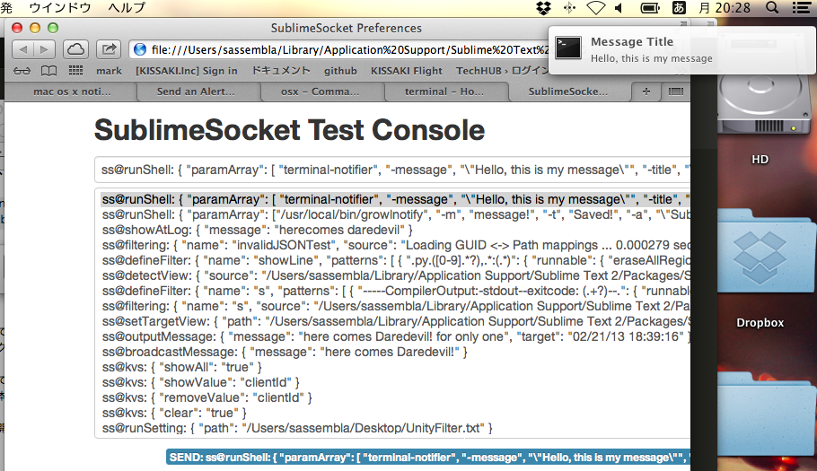

Macで、コマンドラインからなんか通知を出す
概要
通知を出したくなった。
こういうの。 Macで。 できればWindowsでも動く奴が好ましい。
Growlに通知を出す
もうときめかないけど、Growlから出す。
Pythonからinできる仕掛け
GrowlNotifyを使う。
http://www.growl.info/downloads
SublimeTextから叩くコードのお手本みたいなのあったラッキー
https://github.com/flxfxp/My-Stuff/blob/master/Sublime%20Text%202/Plugins/growlnotifier.py
おまけで、WebSocketClientなものもあった。
サクッとだせた
/usr/local/bin/growlnotify -m message! -t Saved! -a "Sublime Text 2"

やったねたえちゃん！
Growlではアプリケーション立ち上げるとかサクッとは出来ない
Notificationをクリックしたときに、別のアプリケーションにフォーカスするとか、
立ち上がるとかやってほしかったんだけど、
GrowlNotifyからはそういう事できないみたいだ。
そうか、、、(Growlをアンインストール)
ろくに貢献もしてないのにごめん、、、ごめんよ、、、
NotificationCenterに通知を出す
Mac限定ここに極まる。
RubyGems使うと簡単だった
特にオープンにCLIとして用意されていない、という事実。
http://osxdaily.com/2012/08/03/send-an-alert-to-notification-center-from-the-command-line-in-os-x/
よって、下記を使わせてもらう事にした。
https://github.com/alloy/terminal-notifier
インストールして実行
terminal-notifier -message "Hello, this is my message" -title "Message Title" -execute "open -a 'Sublime Text 2.App'"

でましたわー。
クリックでコマンドラインの実行も出来た。
でもMac限定が強過ぎる上に、NotificationCenterってMac自身がガンガンつかうので、
本格的な利用(って何)を考えると選べないな。
開発用に使いたいので、日常の用途と混じるとつらい。
上記が実行できるサンプルをSublieSocketに投入してみた
テストコンソールから実行すると、ブラウザ -> SublimeSocket -> NotificationCenter と連携して、Notificationが出る。

以上。